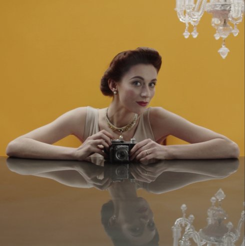

Anuk Jovović
Anuk Jovović born 1984 in Basel. She
lives and works in Basel and Munich. Studied at the Academy of Fine
Arts, Munich. She is currently studying for a Master's degree in
Cultural Management at the University of Basel.
www.anukjovovic.com
Exhibitions Kunstpreis 2013, Baustelle Schaustelle, Esse 2013 | Today Art Museum Beijing 2014 | Kunstverein Gegenwart, Leipzig 2016 | Tenerife Espacio de las Artes 2017 | Granice, Videopark, Uzice 2018 | Jahresgaben, Kunstverein München 2018
Ruth
2017 | Video, Sound
31 min | German
R+B: Anuk Jovović | K: Laura Kansy
T: Joachim von Breitenstein | Kostüm: Ruth Herzing | Stimme: Cathrin
Strömer
Mit Jörg Besser, Linnéa Schwarz, Phoebe (dog)
Portrait of the art historian Ruth P. The focus is on Ruth's passion for staging herself and her devotion to her second husband, the successful architect C. P., whom she married at the age of 33. Letters from and to Ruth, as well as excerpts from her autobiography and from the artist portfolio of Ruth and C.'s art collection are read out. The set and costume are mostly from Ruth's legacy. The interior is based on her last residence, designed and built by C.. The scenes are staged like paintings and inspired by models from the research material.